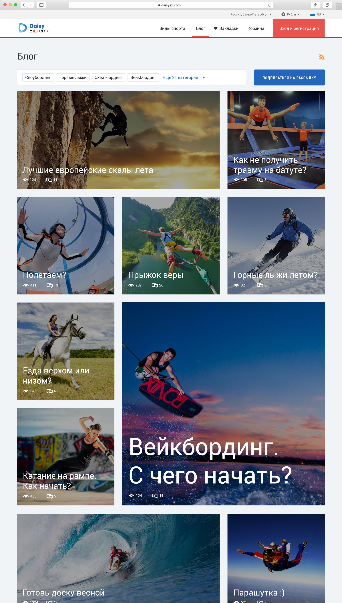
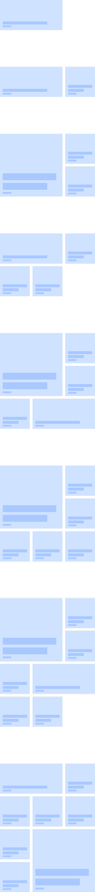
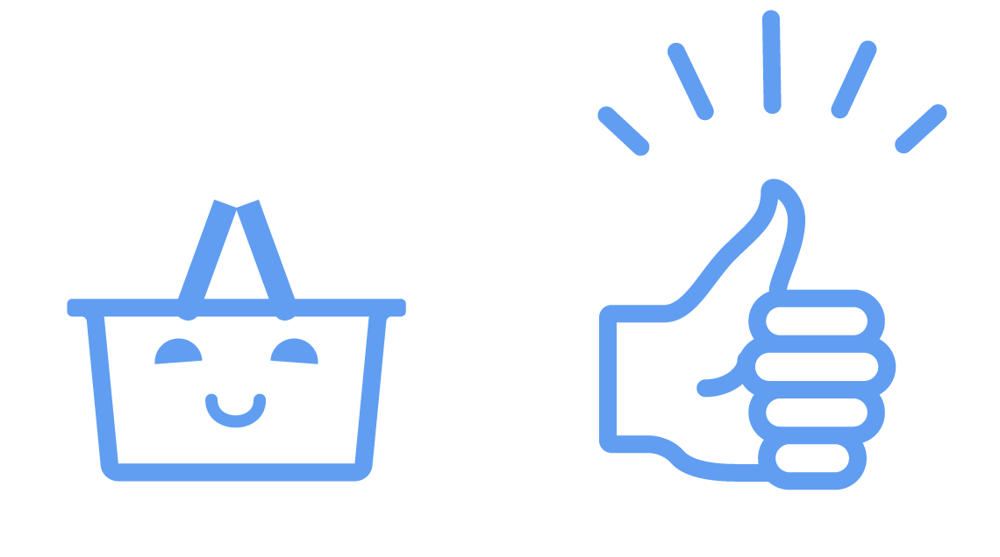

<!DOCTYPE html>
<html lang="ru">

</html>

<head>
  <title>Дизайн сервиса Daisy Extreme</title>
  <meta charset="UTF-8" />
  <meta http-equiv="content-type" content="text/html; charset=UTF-8" />
  <meta http-equiv="x-ua-compatible" content="ie=edge" />
  <meta name="viewport" content="width=device-width, initial-scale=1.0" />
  <meta name="MobileOptimized" content="320" />
  <meta name="HandheldFriendly" content="true" />
  <meta name="description" content="Сайт-портфолио дизайнера Вадика Матвеева. Разработка дизайна сайтов, приложение, логотипов, айдентики и фирменных стилей" />
  <meta name="keywords" content="apps, мобильные приложения, mobile, iOS, Android, Windows Phone, iPhone разработка, разработка мобильных приложений" />
  <link href="http://fonts.googleapis.com/css?family=Roboto:100,300,400,700,400italic&amp;amp;subset=latin,cyrillic" rel="stylesheet" type="text/css" />
  <link href="../css/main.css" rel="stylesheet" />
  <link href="https://fonts.googleapis.com/css?family=PT+Serif:400i&amp;subset=cyrillic" rel="stylesheet" /> </head>

<body class="daisy">
  <div class="supheader">
    <div class="container-fluid">
      <div class="row">
        <div class="col-xs-12 text-right"><a class="link link--white lang active">RU</a><a class="link link--white lang">EN</a></div>
      </div>
    </div>
  </div>
  <div class="header">
    <div class="container-fluid">
      <div class="row">
        <div class="nav__logo col-xs-10 col-sm-4 col-md-3">
          <a href="../index.html"></a>
        </div>
        <div class="nav__blog col-xs-5 col-sm-1"><a href="http://fooontic.tumblr.com/" class="link">Блог</a></div>
        <div class="nav__social col-xs-7 col-sm-4"><span class="header__social-me hidden-xs hidden-sm">Сижу в</span>
          <a class="social-icon social-icon--behance"></a>
          <a class="social-icon social-icon--twitter"></a>
          <a class="social-icon social-icon--instagram"></a>
          <a class="social-icon social-icon--facebook"></a>
          <a class="social-icon social-icon--lastfm"></a>
        </div>
        <div class="nav__mail col-xs-7 col-xs-offset-5 col-sm-3 col-sm-offset-0 col-md-offset-1 col-lg-2 col-lg-offset-2">
          <div class="header__mail-me"><span class="hidden-xs">Пишите мне</span><a href="mailto:fooontic@gmail.com" class="link mail">fooontic@gmail.com</a></div>
        </div>
      </div>
    </div>
  </div>
  <div class="daisy-bg"></div>
  <section class="daisy-subheader">
    <h1 class="daisy-subheader__title">Daisy Extreme<span class="wip">WIP</span></h1>
    <div class="container-fluid">
      <div class="row">
        <div class="col-lg-1 col-lg-offset-1">
          <p class="project__year">2016</p>
        </div>
        <div class="col-lg-8">
          <p class="daisy-subheader__flow">Передо мной стояла задача нарисовать дизайн сайта для поиска активного отдыха. Diasy Extreme один из самых крупных проектов, над которым я работал. Функционал сервиса включает в себя: поиск площадок и предложений для спортивного отдыха, покупка
            билетов, сравнение предложений и отзывов, общение. Для компаний разрабатывается интерфейс добавления своих предложений и их настройка, учет бронирования и статистика. </p>
          <p class="daisy-subheader__flow">Сайт спроектирован адаптивным, чтобы комфортно пользоваться на компьютере, телефонах и планшетах. Помимо дизайн-макетов, я сверстал подобие UI-Kit основных элементов для легкого понимания плавности анимаций на сайте  в дальнейшем. </p>
          <p class="daisy-subheader__flow important-icon">Проект в работе. Представленная ниже версия не окончательная и может дорабатываться. </p>
        </div>
        <div class="col-lg-2">
          <div class="project__madein">
            <p>Выражаю благодарность всем, кто работает над проектом вместе со мной: </p>
            <p>Менеджер проекта: Артур&nbsp;Якубаускас</p>
            <p>Программист: Антон&nbsp;Воробьев</p>
            <p>Верстальщик: Александр&nbsp;Баландин</p>
          </div>
        </div>
      </div>
    </div>
  </section>
  <section class="daisy-main">
    <div class="row">
      <div class="daisy-main__1200"></div>
      <div class="daisy-main__320"></div>
      <div class="col-xs-12 col-md-10 col-md-offset-2 col-lg-7 col-lg-offset-4 col-xl-8">
        <p class="project__flow">Главная страница сайта рассказывает о сервисе и сообщает о горячих предложениях по региону пользователя. </p>
      </div>
    </div>
  </section>
  <section class="daisy-category">
    <div class="container-fluid">
      <div class="row">
        <div class="col-xs-9 col-md-10">
          <div class="daisy-category__img"></div>
        </div>
        <div class="col-xs-3 col-md-2">
          <div class="daisy-category__grid"></div>
        </div>
        <div class="col-xs-12 col-md-10 col-md-offset-2 col-lg-7 col-lg-offset-4 col-xl-8">
          <p class="project__flow">Для каждого вида спорта будет нарисована своя иконка в&nbsp;запоминающимся стиле. Чтобы&nbsp;просматривать страницу категорий было интереснее, я&nbsp;разработал простую сетку для&nbsp;компановки элементов. </p>
        </div>
      </div>
    </div>
  </section>
  <section class="daisy-search">
    <div class="row">
      <div class="col-xs-12 col-md-8 col-md-offset-4">
        <div class="daisy-search__list"></div>
      </div>
      <div class="daisy-search__map"></div>
      <div class="col-xs-12 col-md-10 col-md-offset-2 col-lg-7 col-lg-offset-4 col-xl-8">
        <p class="project__flow">Выдачу предложений можно смотреть списком и на карте. </p>
      </div>
    </div>
  </section>
  <section class="daisy-business">
    <div class="row">
      <div class="col-xs-12 col-md-8 col-md-offset-4">
        <div class="daisy-business__offer"></div>
      </div>
      <div class="daisy-business__company wow fadeInLeft"></div>
      <div class="col-xs-12 col-md-10 col-md-offset-2 col-lg-7 col-lg-offset-4 col-xl-8">
        <p class="project__flow">Страницы компании и предложения. </p>
      </div>
    </div>
  </section>
  <section class="daisy-cabinet">
    <div class="container-fluid">
      <div class="row">
        <div class="col-xs-12 col-md-2">
          <h2 class="project__subtitle">Кабинет</h2> </div>
        <div class="col-xs-12 col-md-7">
          <p class="project__flow">Львиной долей проекта было проектирование личного кабинета. Личный кабинет простых пользователей состоит из избранного, моих покупок, уведомлений и возможности создать компанию. После добавления новой компании или принятия приглашения стать
            частью команды уже существующей компании, функционал личного кабинета расширяется до подачи и редактирование объявлений, учета бронирования, статистики продаж, настройки компании и прочее. </p>
        </div>
        <div class="col-xs-12 col-md-3">
          <p class="project__flow"> <span class="daisy-cabinet__accent">Более 40 макетов </span>для 3-х разрешений. </p>
        </div>
      </div>
    </div>
    <div class="slider-container">
      <div class="slider">
        <ul class="slide-line">
          <li class="slide-item slide-item--1">
            <div style="background-image: url(../img/daisy__cabinet-1.jpg)" alt="" class="slide-screenshot"></div>
          </li>
          <li class="slide-item slide-item--2">
            <div style="background-image: url(../img/daisy__cabinet-2.jpg)" alt="" class="slide-screenshot"></div>
          </li>
          <li class="slide-item slide-item--3">
            <div style="background-image: url(../img/daisy__cabinet-3.jpg)" alt="" class="slide-screenshot"></div>
          </li>
          <li class="slide-item slide-item--4">
            <div style="background-image: url(../img/daisy__cabinet-4.jpg)" alt="" class="slide-screenshot"></div>
          </li>
          <li class="slide-item slide-item--5">
            <div style="background-image: url(../img/daisy__cabinet-5.jpg)" alt="" class="slide-screenshot"></div>
          </li>
          <li class="slide-item slide-item--6">
            <div style="background-image: url(../img/daisy__cabinet-6.jpg)" alt="" class="slide-screenshot"></div>
          </li>
        </ul>
      </div>
    </div>
    <div class="slider-edge"> </div>
  </section>
  <section class="daisy-blog">
    <div class="container-fluid">
      <div class="row">
        <div class="col-xs-9 col-md-10">
          <div class="daisy-blog__img"></div>
        </div>
        <div class="col-xs-3 col-md-2">
          <div class="daisy-blog__grid"></div>
        </div>
        <div class="col-xs-12 col-md-10 col-md-offset-2 col-lg-7 col-lg-offset-4 col-xl-8">
          <p class="project__flow">Для визуального разнообразия блога придумал простую систему размещения статей в сетке страницы. </p>
        </div>
      </div>
    </div>
  </section>
  <section class="daisy-graphics">
    <div class="container-fluid">
      <div class="row">
        <div class="col-xs-12 col-md-6 col-lg-5 col-lg-offset-1"></div>
        <div class="col-xs-12 col-md-6 col-lg-5"></div>
      </div>
    </div>
    <div class="daisy-mistakes switcher">
      <div class="container-fluid">
        <div class="row">
          <div class="col-xs-12 col-lg-10 col-lg-offset-1">
            <div id="mis403" class="daisy-mistakes__403 switchSelected"></div>
            <div id="mis404" class="daisy-mistakes__404"></div>
          </div>
          <div class="col-xs-12 col-md-10 col-md-offset-2 col-lg-7 col-lg-offset-4 col-xl-8">
            <p class="project__flow switchNav">Приятные мелочи. Создан единый задорный стиль графики для сайта. На его основе сделаны веселые страницы <span id="for_mis403" class="switch active">403</span> и <span id="for_mis404" class="switch">404</span> ошибок.</p>
          </div>
        </div>
      </div>
    </div>
    <div class="daisy-loader__inner"></div>
  </section>
  <footer class="footer">
    <div class="container-fluid">
      <div class="row">
        <div class="likely-inner col-xs-12 col-md-6 col-md-push-6"><span class="share">Поделиться </span>
          <div class="likely likely-big">
            <div data-via="fooontic_" class="twitter"></div>
            <div class="facebook"></div>
            <div class="vkontakte"></div>
            <div data-text="Зацени-ка" class="telegram"></div>
          </div>
        </div>
        <div class="col-xs-12 col-md-6 col-md-pull-6">
          <div class="footer__copyright">© 2015</div>
          <div class="footer__mail">Пишите мне на <a class="link">fooontic@gmail.com</a></div>
        </div>
      </div>
    </div>
  </footer>
  <script src="../js/main.min.js"></script>
  <script>
    // WOW Animation ////////////////////////////////
    new WOW().init();
    // Bg follow to /////////////////////////////////
    var windw = this;
    $.fn.followTo = function(pos)
    {
      var $this = this,
        $window = $(windw);
      $(window).scroll(function(e)
      {
        if ($window.scrollTop() > pos)
        {
          $this.css(
          {
            position: 'absolute',
            top: pos + bgTop
          });
        }
        else
        {
          $this.css(
          {
            position: 'fixed',
            top: '122px'
          })
        }
      })
    }
    var bgTop = 122;
    $('.daisy-bg').followTo(379);
    // Parallax ////////////////////////////////////
    $.fn.parallax = function(pos)
    {
      var $this = this,
        scrolled = $(window).scrollTop();
      //- var scrolledMain = $(window).scrollTop(653);
      $this.css('bottom', (pos + scrolled * 0.4) + 'px');
    }
    $(window).scroll(function(e)
    {
      $('.daisy-main__320').parallax(500);
    });
    $(window).scroll(function(e)
    {
      if ($(window).scrollTop() > 3500)
      {
        var scrolled = $(window).scrollTop();
        $('.daisy-search__map').css('bottom', (-600 + scrolled / 4) + 'px');
      }
    });
    //- $(window).scroll(function(e){
    //- 	$('.daisy-main').animate(
    //- 		{
    //- 			top: "-400px"
    //- 		},
    //- 	400);
    //- });
    // Slider /////////////////////////////////////
    $(function()
    {
      $('.slide-line').slideLine(
      {
        ratio: 0.99
      });
    });
  </script>
</body>